准备
首先准备好Centos7 系统 在我之前的博客有介绍安装 可以参考下
惯例，连接上系统先 yum update 一下
安装
Centos7 默认 yum源里面没有nginx
1 | sudo rpm -Uvh http://nginx.org/packages/centos/7/noarch/RPMS/nginx-release-centos-7-0.el7.ngx.noarch.rpm |
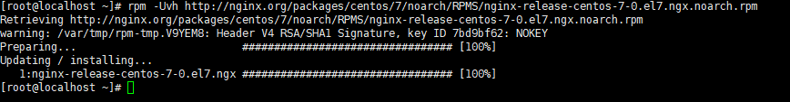
yum search nginx 看下有没有Nginx的包了
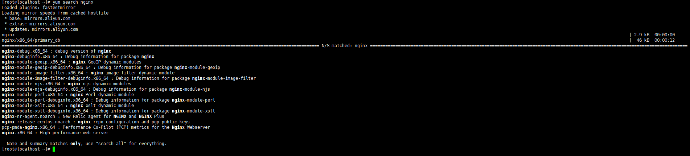
yum install -y nginx 开始安装
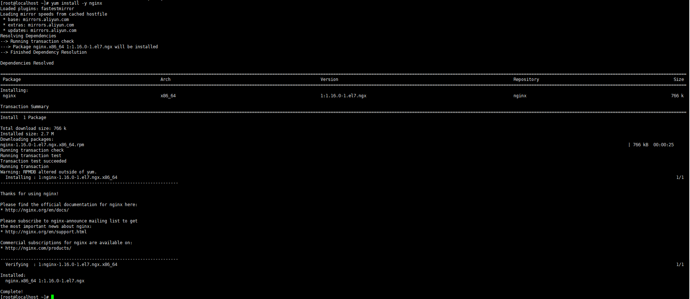
看到 Complete! 就说明已经安装成功了！
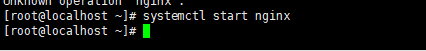
systemctl start nginx
ss -tnpl |grep 80 可以看到nginx 开始监听80端口了
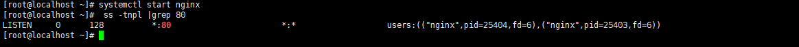
如果不能访问 暂时关闭防火墙试试
看到下面这个界面就是成功了
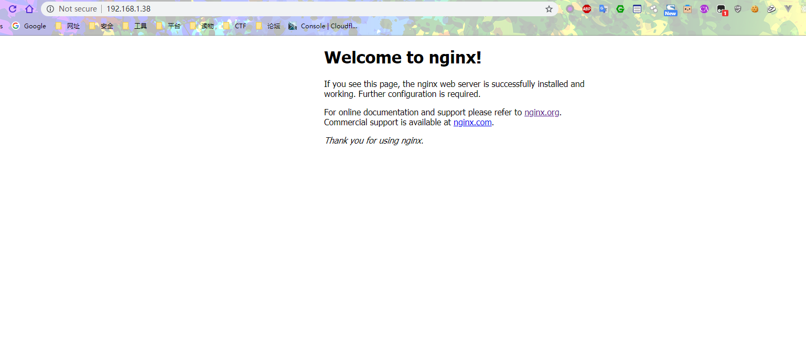
配置文件
Nginx 安装好
默认web目录在 /usr/share/nginx/html
配置文件在 /etc/nginx/conf.d/
找不到默认web目录可以通过cat /etc/nginx/conf.d/default.conf
找到
1 | location / { |
反代
nginx作为web服务器一个重要的功能就是反向代理
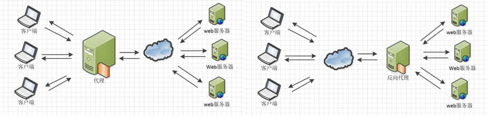
Nginx在做反向代理时，提供性能稳定，并且能够提供配置灵活的转发功能。Nginx可以根据不同的正则匹配，采取不同的转发策略，比如图片文件结尾的走文件服务器，动态页面走web服务器，只要你正则写的没问题，又有相对应的服务器解决方案，你就可以随心所欲的玩。并且Nginx对返回结果进行错误页跳转，异常判断等。如果被分发的服务器存在异常，他可以将请求重新转发给另外一台服务器，然后自动去除异常服务器。
我的SpringBoot 项目运行在 本地的8080端口，我们用Nginx 去反代这个端口
在命令后面加 & 就可以保持在后台运行
java -jar demo-0.0.1-SNAPSHOT.jar &
在配置文件里面
1 | location / { |
这样配置就可以进行反代127.0.0.1:8080
重启下Nginx systemctl reload nginx
打开报错502
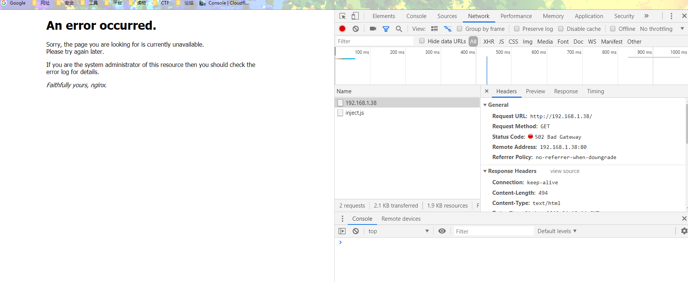
首先去看下错误日志 cat /var/log/nginx/error.log
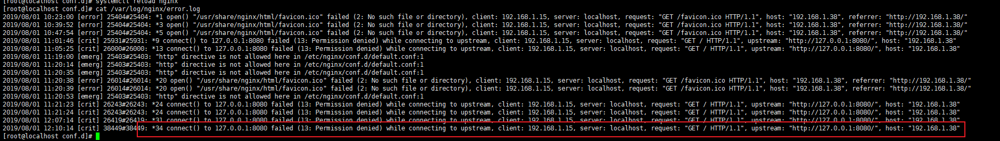
1 | connect() to 127.0.0.1:8080 failed (13: Permission denied) while connecting to upstream |
Google 搜了下，似乎是 SeLinux 的锅
setsebool -P httpd_can_network_connect 1
反代成功
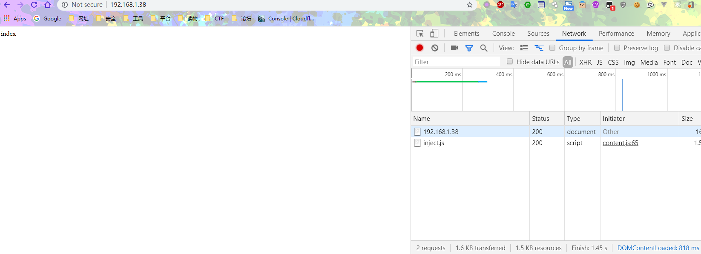
反代配置解释
负载均衡
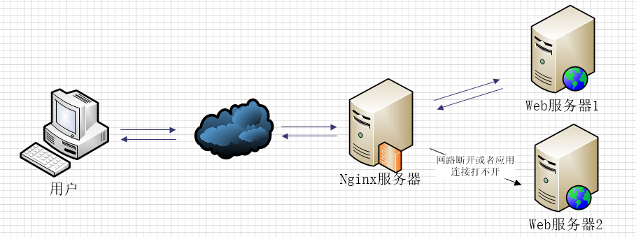
如果负载均衡中其中web2发生这样的情况，nginx首先会去web1请求，但是nginx在配置不当的情况下会继续分发请求道web2，然后等待web2响应，直到我们的响应时间超时，才会把请求重新分发给web1，这里的响应时间如果过长，用户等待的时间就会越长。
1 | proxy_connect_timeout 1; #nginx服务器与被代理的服务器建立连接的超时时间，默认60秒 |
upstream
如果使用upstream指令配置，一组服务器作为被代理服务器，服务器中的访问算法遵循配置的负载均衡规则，同时可以使用该指令配置在发生哪些异常情况时，将请求顺次交由下一组服务器处理
1 | proxy_next_upstream timeout; #反向代理upstream中设置的服务器组，出现故障时，被代理服务器返回的状态值。error|timeout|invalid_header|http_500|http_502|http_503|http_504|http_404|off |
error：建立连接或向被代理的服务器发送请求或读取响应信息时服务器发生错误。
timeout：建立连接，想被代理服务器发送请求或读取响应信息时服务器发生超时。
invalid_header:被代理服务器返回的响应头异常。
off:无法将请求分发给被代理的服务器。
http_400，….:被代理服务器返回的状态码为400，500，502，等。
真实ip
如果你想通过http获取客户的真是ip而不是获取代理服务器的ip地址，那么要做如下的设置。1
2
3proxy_set_header Host $host; #只要用户在浏览器中访问的域名绑定了 VIP VIP 下面有RS；则就用$host ；host是访问URL中的域名和端口 www.taobao.com:80
proxy_set_header X-Real-IP $remote_addr; #把源IP 【$remote_addr,建立HTTP连接header里面的信息】赋值给X-Real-IP;这样在代码中 $X-Real-IP来获取 源IP
proxy_set_header X-Forwarded-For $proxy_add_x_forwarded_for;#在nginx 作为代理服务器时，设置的IP列表，会把经过的机器ip，代理机器ip都记录下来，用 【，】隔开；代码中用 echo $x-forwarded-for |awk -F, '{print $1}' 来作为源IP
配置文件详细解释
1 | include mime.types; #文件扩展名与文件类型映射表 |
反代负载均衡
负载均衡
Nginx提供的负载均衡策略有2种：内置策略和扩展策略。内置策略为轮询，加权轮询，Ip hash。扩展策略。
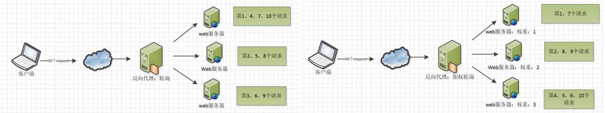
Ip hash算法，对客户端请求的ip进行hash操作，然后根据hash结果将同一个客户端ip的请求分发给同一台服务器进行处理，可以解决session不共享的问题。
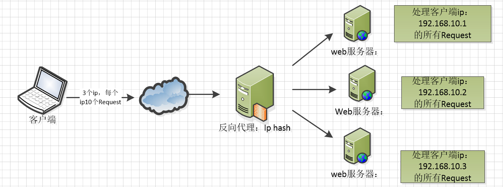
配置
upstream这个配置的，这个配置是写一组被代理的服务器地址，然后配置负载均衡的算法。这里的被代理服务器地址有2中写法
1 | upstream mysvr { |
测试
修改配置文件需要重启！！！！！！！！
我们来测试下， ps 找到刚刚在后台运行的SpringBoot 进程
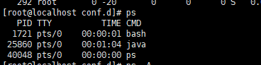
kill 25860
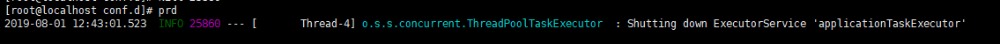
再访问我们的网站
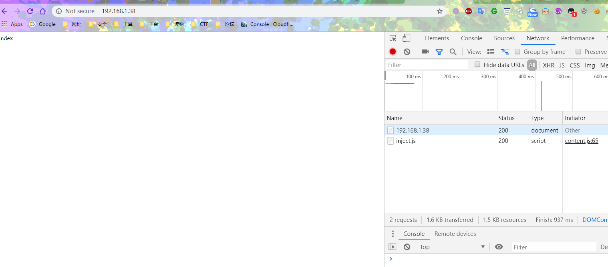
还是可以正常访问，可以看到我本机的日志出现了访问的信息
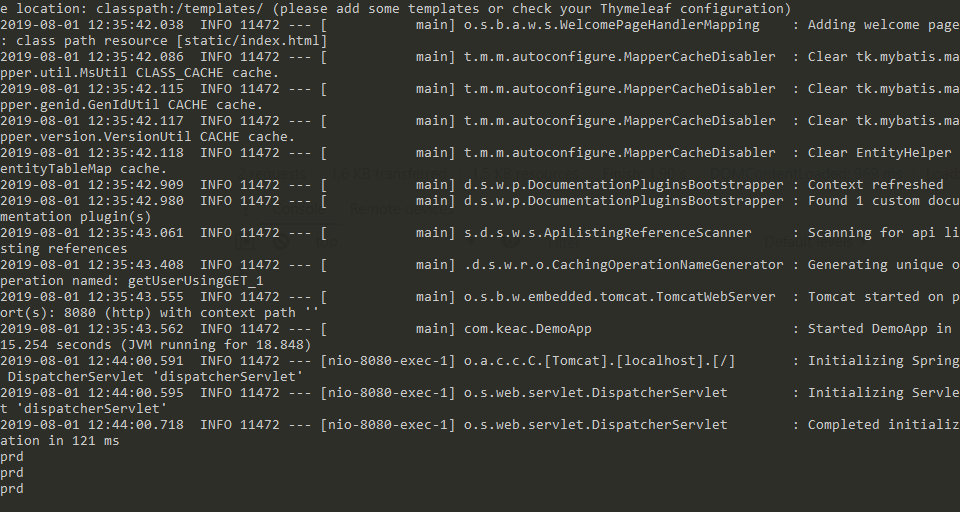
我们再启动SpringBoot
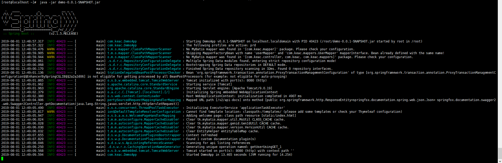
再访问网站，可以看到服务器端已经打印信息了
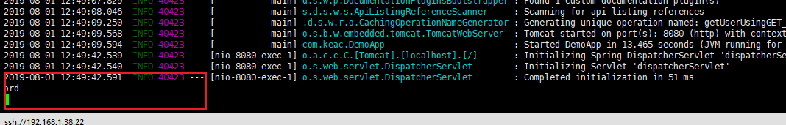
当持续访问的时候，两台分别打印信息
分类
热备
如果你有2台服务器，当一台服务器发生事故时，才启用第二台服务器给提供服务。服务器处理请求的顺序：AAAAAA Boom，BBBBBBBBBBBBBB…..
1 | upstream mysvr { |
轮询
nginx默认就是轮询其权重都默认为1，服务器处理请求的顺序：ABABABABAB….
1 | upstream mysvr { |
加权轮询
跟据配置的权重的大小而分发给不同服务器不同数量的请求。如果不设置，则默认为1。下面服务器的请求顺序为：ABBABBABBABBABB….
1 | upstream mysvr { |
ip_hash
nginx会让相同的客户端ip请求相同的服务器。
1 | upstream mysvr { |
状态
关于nginx负载均衡配置的几个状态参数讲解。
down，表示当前的server暂时不参与负载均衡。
backup，预留的备份机器。当其他所有的非backup机器出现故障或者忙的时候，才会请求backup机器，因此这台机器的压力最轻。
max_fails，允许请求失败的次数，默认为1。当超过最大次数时，返回proxy_next_upstream 模块定义的错误。
fail_timeout，在经历了max_fails次失败后，暂停服务的时间。max_fails可以和fail_timeout一起使用。